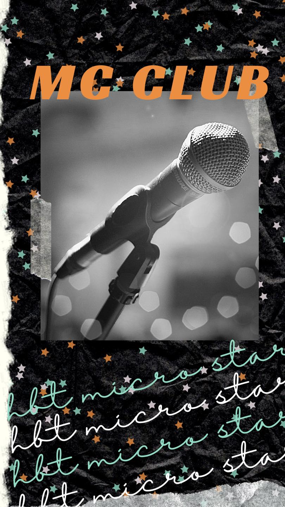
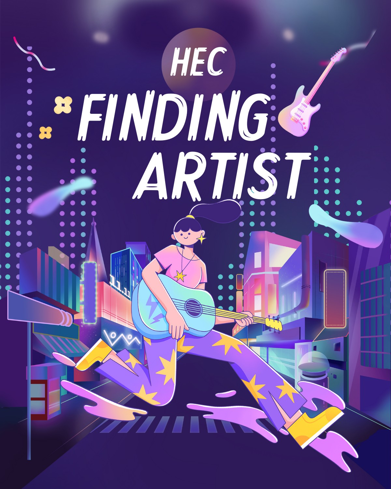

Thông Báo
Bên cạnh hoạt động văn nghệ của trường mừng kỉ niệm 60 năm thành lập, câu lạc bộ bóng rổ cũng tổ chức cuộc thi giao lưu giữa các bạn học sinh và cựu học sinh Đoàn Kết - Hai Bà Trưng.
🆘 Hạn đăng kí các đội tham gia :
Nữ : 18h ngày 16/11/2023
Nam : 18h ngày 17/11/2023
Mọi vấn đề thắc mắc xin liên hệ : 0921713676
HMS là tên viết tắt của HaiBaTrung Micro Star - một câu lạc bộ mới toe được thành lập với mục đích lan toả tiếng nói DKHBT-ers bởi một nhóm các bạn học sinh có niềm đam mê với MC - Master of Ceremonies.

CHƯƠNG TRÌNH KỈ NIỆM 60 NĂM THÀNH LẬP TRƯỜNG
Trải qua biết bao chuyến đò thì giờ đây, ngôi trường THPT Đoàn Kết - Hai Bà Trưng đã tròn 60 năm tuổi ( 1960 - 2020 ).
Để kỉ niệm cho ngày lễ đặc biệt này, nhà trường sẽ tổ chức chương trình giao lưu, gặp gỡ giữa các thế hệ học sinh vào hai ngày :
Thứ 7 ( 14/11/2020 )
Chủ Nhật ( 15/11/2020 )
Nếu có bất kì thắc mắc gì, đừng ngại ngần để lại câu hỏi ngay bên dưới hoặc nhắn tin trực tiếp cho chúng mình để được giải đáp nhé!
Bạn là các đội nhóm hay cá nhân yêu thích âm nhạc và sự cuồng nhiệt trong mỗi sự kiện mà HEC - HAI BA TRUNG Entrepreneur Community mang lại
